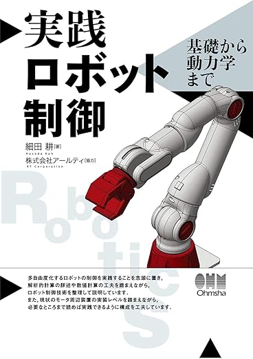
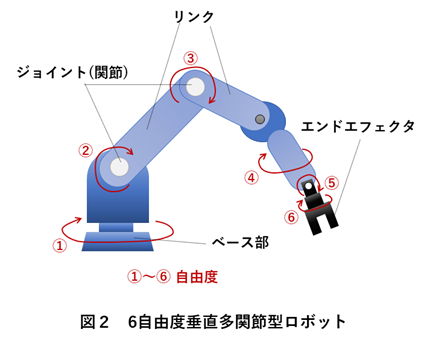

ゼロからのROS1
力制御とインピーダンス制御
大阪大学 中島優作
力制御参考資料
本スライド(実践)、教科書(理論)の併用がおススメ

ロボット工学の基礎から力制御理論まで、分かりやすいイラストで解説
インピーダンス制御の基礎理論も含まれている

力制御、インピーダンス制御の理論と実装の詳細解説
実際の接触タスクに必要な制御理論が充実
なぜ力制御が必要なのか？
位置制御の限界
- 硬い物体との接触で大きな力が発生
- 組み立てや研削などの接触作業が困難
- 安全性に問題（人間との協調作業）
力制御の利点
- 接触力を制御して安全な作業が可能
- 組み立て、研削、研磨などの接触タスク
- 人間との協調作業や柔軟物との作業
本スライドでは力制御の実装を扱います
- 実装方法1: インピーダンス制御
仮想スプリングダンパーシステムで柔軟性を実現
組み立てや研削作業に適している - 実装方法2: アドミッタンス制御
力入力から位置出力を生成
人間との協調作業や手動誘導に便利
ROS2ではこれらのコントローラが標準で提供されている
力制御の種類と組み合わせ
| 制御方式 | 座標系 | ユーザーが実現したい制御 |
|---|---|---|
| インピーダンス制御 | 直交座標系 | 力(コンプライアンス) |
| アドミッタンス制御 | 直交座標系 | 位置(柔軟性) |
| ハイブリッド制御 | 直交座標系 | 位置+力 |
ROS2力制御コントローラ命名則
admittance_controller/CartesianImpedanceController
ROS2の力制御コントローラ
参考: Admittance Controller Documentation
- admittance_controller/AdmittanceController
- force_torque_sensor_broadcaster/ForceTorqueSensorBroadcaster
- joint_trajectory_controller/JointTrajectoryController (組み合わせ用)
直交空間用力制御コントローラ
参考: cartesian_controllers (ROS2用)
力センサーのフィードバックを使った直交空間制御
- cartesian_force_controller/CartesianForceController
- cartesian_compliance_controller/CartesianComplianceController
- cartesian_motion_controller/CartesianMotionController (ハイブリッド)
力制御に必要なハードウェア

力/トルクセンサー
手先や関節に取り付けて接触力を検出
- 6軸力センサー（手先用）
- 関節トルクセンサー
- コンプライアントロボット
力制御対応ロボット

コンプライアントロボット
力制御やインピーダンス制御が可能
- Franka Robotics (Panda)
- KUKA (iiwa)
- URシリーズ（力センサー付き）
インピーダンス制御理論
インピーダンス制御とは

- 仮想的なスプリング・ダンパー・質量システムを実現
- 目標位置と現在位置の差から力を計算
- 接触力を制限して安全な作業が可能
インピーダンス制御の数式
F = Mẍ + Dẋ + K(x - x_d)
- F: 発生する力
- M: 仮想悅性
- D: 仮想粘性
- K: 仮想弾性
- x - x_d: 位置誤差
インピーダンスパラメータの調整
- K(弾性): 大きい→硬い、小さい→柔らかい
- D(粘性): 振動を抑制、安定性向上
- M(慣性): 動的な応答を決定
- 作業に応じてパラメータを調整
アドミッタンス制御とは
- インピーダンス制御の逆
- 力入力 → 位置出力
- 人間の手動誘導に適している
- メリット
- 直感的な操作が可能
- 安全性が高い
アドミッタンス制御の数式
ẍ = M⁻¹[F - Dẋ - K(x - x_d)]
- 力入力から加速度を計算
- 加速度を積分して位置を求める
- インピーダンス制御の逆関数
- 特徴
- 力を入力、位置を出力
- 人間の力に応じて動く
- 柔軟な動作が可能
- 適用例
- 手動誘導(ティーチング)
- 人間との協調作業
- 組み立て作業
インピーダンス vs アドミッタンス比較
- インピーダンス制御
- 位置誤差から力を計算
- 精密位置決めに適している
- 硬い環境で不安定になりやすい
- アドミッタンス制御
- 力から位置を計算
- 柔軟な動作に適している
- 人間とのインタラクションに最適
力/トルクセンサーの種類
- 6軸力センサー
- 手先に取り付け
- Fx, Fy, Fz, Tx, Ty, Tzを測定
- 関節トルクセンサー
- 各関節に内蔵
- コンプライアントロボットに搭載
力制御実装のフロー
- ステップ1: 力/トルクセンサーのセットアップ
- ステップ2: インピーダンス/アドミッタンスパラメータの設定
- ステップ3: コントローラの起動と安全性確認
- ステップ4: 作業実行とモニタリング
ROS2での力制御実装

ROS2力制御システムの構成
- センサーブロードキャスター
- force_torque_sensor_broadcaster
- 力制御コントローラ
- admittance_controller
- cartesian_compliance_controller
- 安全機能
- 力制限、緊急停止
- 衝突検出
力/トルクセンサーのセットアップ
力センサーの取り付けとキャリブレーション
- センサーの物理的取り付け
- オフセットキャリブレーション
- ROS2でのトピック配信確認
アドミッタンスコントローラの設定
- 設定ファイル: YAMLでパラメータを定義
- センサー連携: force_torque_sensorとの結合
- 安全設定: 力の上限値や速度制限
- チューニング: M, D, Kパラメータの調整
ハイブリッド位置/力制御
- 最適アプローチ: 方向ごとに位置/力制御を切り替え
- 例: Z軸方向は力制御、XY平面は位置制御
- 用途: 研削、研磨、組み立て作業
- 実装: MoveIt + Admittance Controllerの組み合わせ